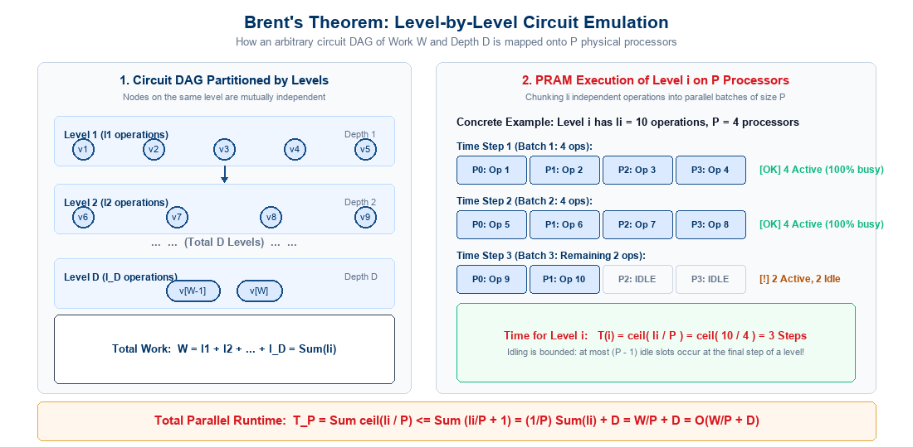
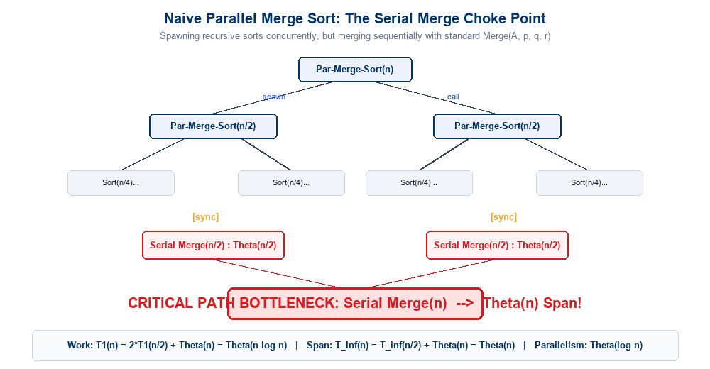
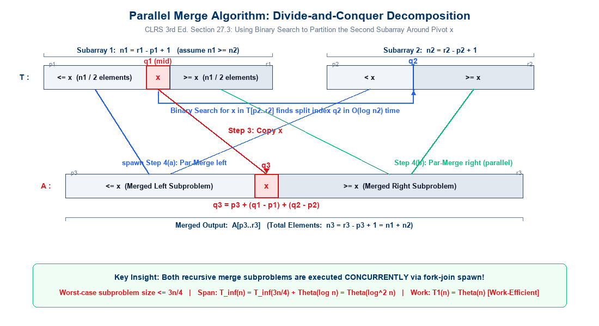
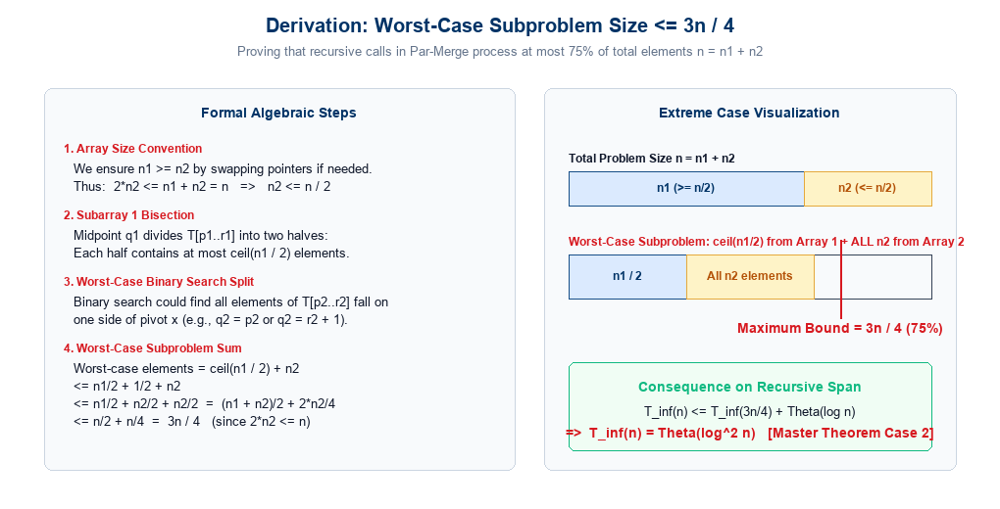
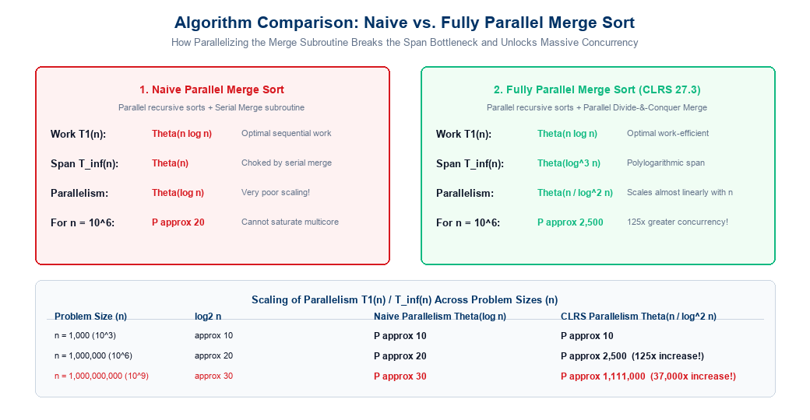

Brent’s Theorem & Parallel Merge Sort
Lecture Outline
- Foundations: Bridging Abstract Circuits to Physical Machines:
- The Circuit Model abstraction: Directed Acyclic Graphs (DAGs), Work (\(W\)), and Depth (\(D\)).
- Constant fan-in constraints and topological leveling.
- Brent’s Theorem (Scheduling Principle):
- Statement of the theorem: Simulating arbitrary circuits of size \(W\) and depth \(D\) on \(P\) processors in \(O(W/P + D)\) steps.
- Formal proof: Level-by-level PRAM emulation, processor allocation \(\lceil l_i / P \rceil\), and summation over \(D\) levels.
- Why CREW PRAM is required (handling node fan-out \(> 1\)).
- Theoretical bounds: The work-optimality threshold (\(P \le W/D\)) and processor allocation.
- Parallel Merge Sort: The Naive Bottleneck:
- Review of serial Merge Sort (\(O(n \log n)\)).
- First parallelization attempt: Spawning recursive sorts with standard serial merge.
- Work-span analysis: \(T_1(n) = \Theta(n \log n)\), \(T_\infty(n) = \Theta(n)\), Parallelism \(= \Theta(\log n)\).
- Diagnosing the Amdahl choke point: Why serial merge cripples large-scale scalability.
- Parallel Merge Algorithm (CLRS Chapter 27.3):
- The core insight: Parallelizing the merge subroutine itself via divide-and-conquer.
- Step 1: Median pivot selection (\(x = T[q_1]\)) in the larger subarray.
- Step 2: Binary search partitioning in the second subarray (\(q_2\)).
- Step 3: Exact output destination rank computation (\(q_3 = p_3 + (q_1 - p_1) + (q_2 - p_2)\)) and direct placement.
- Step 4: Spawning concurrent recursive merges on the lower and upper subarrays.
- Rigorous Complexity Derivation:
- Mathematical proof of the worst-case recursive subproblem size (\(\le \frac{3}{4} n\)).
- Span recurrence: \(T_\infty(n) = T_\infty(3n/4) + \Theta(\log n) \implies \Theta(\log^2 n)\).
- Work recurrence: \(T_1(n) = T_1(\alpha n) + T_1((1-\alpha)n) + \Theta(\log n) \implies \Theta(n)\) [Work-Efficient!].
- Fully Parallel Merge Sort Complexity:
- Overall sorting Work: \(T_1(n) = \Theta(n \log n)\).
- Overall sorting Span: \(T_\infty(n) = T_\infty(n/2) + \Theta(\log^2 n) \implies \Theta(\log^3 n)\).
- Parallelism scaling: \(P = \Theta(n / \log^2 n)\) — unlocking orders-of-magnitude concurrency.
The Circuit Model: Recap of Work and Depth
Before executing an algorithm on physical processors, we model its intrinsic concurrency using the Circuit Model:
DAG Representation
- An algorithm is modeled as a Directed Acyclic Graph (DAG) \(\mathcal{G} = (V, E)\):
- Input Nodes: External inputs fed into the circuit.
- Internal Nodes: Primitive operations (e.g., \(+\), \(\times\), \(\land\), comparisons).
- Directed Edges: Data dependencies directing output operands to consumer operations.
- Constant Fan-in: Each internal node has at most \(k = O(1)\) inputs (typically 2 for binary operations).
- Arbitrary Fan-out: The output of a node can be consumed by multiple subsequent operations simultaneously.
Fundamental Circuit Metrics
- Size / Work (\(W\)):
- The total number of internal operation nodes in the circuit DAG: \[W = |V_{\text{internal}}|\]
- Represents the total computational effort executed by a single processor (\(T_1\)).
- Depth (\(D\)):
- The length of the longest directed path from any input node to any output node: \[D = \text{Critical Path Length} = T_\infty\]
- Represents the minimum time required even with an infinite number of processors (\(P = \infty\)).
Fundamental Lower Bound: Any physical execution on \(P\) processors requires at least: \[T_P \ge \max\left( \frac{W}{P}, D \right)\] The term \(W/P\) is the work limit (capacity bound), and \(D\) is the depth limit (dependency bound).
Brent’s Theorem: Formal Statement
Brent’s Theorem (Richard P. Brent, 1974) provides the fundamental mathematical bridge connecting abstract DAG circuit complexity to concrete physical machine scheduling:
Brent’s Scheduling Theorem:
Any algorithm that can be represented as a circuit DAG of size (work) \(W\) and depth (critical path) \(D\) with constant fan-in nodes (\(k = O(1)\)) can be executed in: \[\boxed{T_P \le \frac{W - D}{P} + D < \frac{W}{P} + D = O\left( \frac{W}{P} + D \right)}\] steps on a CREW PRAM model with \(P\) processors.
Deconstructing the Bound
- Work Term \(\frac{W}{P}\):
- The ideal linear speedup component.
- Distributes total computational work evenly across all \(P\) physical processors.
The Depth Limit \(D\)
- Latency Term \(D\):
- Inherent critical-path dependency bound.
- Represents the irreducible sequential steps that no amount of parallelism can compress.
Model Assumption: Bounded fan-in (\(k = O(1)\) per node) and Concurrent Read, Exclusive Write (CREW) shared memory.
Brent’s Theorem: Algorithmic Significance
Why is Brent’s Theorem considered one of the most celebrated results in parallel algorithm design?
1. Hardware-Agnostic Design
- Idealized Concurrency:
- Algorithm designers develop algorithms for abstract DAGs with unbounded concurrency (\(W, D\)) without worrying about physical core counts.
- Automatic Scalability:
- Brent’s Theorem guarantees the computation scales automatically to any physical processor count \(P\) without needing a bespoke scheduler for each architecture.
2. Work-Depth Characterization
- Universal Metrics:
- An algorithm’s parallel capability is completely characterized by its total operations (\(W\)) and span (\(D\)).
- Direct Emulation Bridge:
- Yields a constructive, level-by-level methodology to schedule DAG operations onto synchronous shared-memory machines.
Near-Optimal Scheduling Guarantee:
Since any physical execution requires \(T_P \ge \max\left( \frac{W}{P}, D \right)\), Brent’s upper bound \(T_P \le \frac{W}{P} + D \le 2 \max\left( \frac{W}{P}, D \right)\) is within a factor of 2 of the absolute theoretical optimum!
Brent’s Theorem: Proof Strategy & Leveling
We prove the theorem by constructing an explicit level-by-level emulation of the circuit DAG on a PRAM:
1. Topological Level Assignment
- Decompose the DAG vertices into discrete topological levels \(i \in \{1, 2, \dots, D\}\):
- Base Case (Level 1): A node \(v\) is on Level 1 if all of its inputs are external circuit inputs.
- Inductive Step: For any other node \(u\), its level is defined as: \[\text{level}(u) = 1 + \max_{v \in \text{Pred}(u)} \{ \text{level}(v) \}\]
- Independence Property:
- All nodes on the same level \(i\) depend only on outputs computed in earlier levels (\(< i\)).
- Therefore, all nodes on level \(i\) are mutually independent and can be evaluated in any order or in parallel!
2. Node Counts per Level (\(l_i\))
- Let \(l_i\) denote the number of internal operation nodes situated on level \(i\).
- Sum of Operations:
- Every operation node in the circuit belongs to exactly one level \(i \in \{1, \dots, D\}\).
- Summing the node counts across all levels yields the total work \(W\): \[\sum_{i=1}^D l_i = W\]
- Depth Equality:
- The number of levels is precisely equal to the depth \(D\) of the circuit DAG.
Observation: The levels define a strict topological sequence of barriers: Level 1 must finish before Level 2 can complete, which must finish before Level 3, and so on.
Brent’s Theorem: PRAM Emulation & Concurrent Reads
How does a PRAM with \(P\) processors execute the \(l_i\) nodes of level \(i\)?
Processor Allocation per Level
- On level \(i\), there are \(l_i\) independent tasks to execute.
- We partition the \(l_i\) tasks evenly among the \(P\) processors:
- Each processor executes at most \(\lceil l_i / P \rceil\) operations sequentially.
- Execution Time for Level \(i\): \[T(i) = \left\lceil \frac{l_i}{P} \right\rceil \text{ steps}\]
- If \(l_i \ge P\), all \(P\) processors are fully utilized for \(\lfloor l_i / P \rfloor\) steps, and a subset of processors executes the remaining \(l_i \bmod P\) operations.
- If \(l_i < P\), only \(l_i\) processors are active for 1 step, while \(P - l_i\) processors remain idle.
Why CREW PRAM is Essential
- Consider a node \(v\) on level \(i - 1\) whose output value is required by \(k\) distinct nodes on level \(i\): \[\text{fan-out}(v) = k > 1\]
- In the PRAM shared memory:
- The result of node \(v\) resides in a single shared memory cell.
- The \(k\) operations on level \(i\) are assigned to different processors.
- These processors must read the contents of that cell simultaneously!
- Hence, Concurrent Reads (CR) are mandatory!
- Writes are always Exclusive (EW) because each node writes its output to a unique memory location.
Brent’s Theorem: Level-by-Level Emulation

Level-by-level emulation: Partitioning the circuit DAG into \(D\) independent levels and scheduling \(l_i\) operations in parallel batches of size \(P\), taking \(\lceil l_i / P \rceil\) steps per level
Brent’s Theorem: Formal Summation Proof
We compute the total PRAM execution time by summing the steps required across all \(D\) levels:
\[T_{\text{PRAM}}(W, D, P) = \sum_{i=1}^D \left\lceil \frac{l_i}{P} \right\rceil\]
Algebraic Derivation
- Using the standard ceiling property \(\lceil x \rceil < x + 1\), or \(\lceil \frac{a}{b} \rceil \le \frac{a}{b} + \frac{b-1}{b} < \frac{a}{b} + 1\): \[\left\lceil \frac{l_i}{P} \right\rceil \le \frac{l_i}{P} + \frac{P-1}{P} < \frac{l_i}{P} + 1\]
- Substituting this into the level summation: \[T_{\text{PRAM}}(W, D, P) \le \sum_{i=1}^D \left( \frac{l_i}{P} + 1 \right)\] \[= \frac{1}{P} \left( \sum_{i=1}^D l_i \right) + \sum_{i=1}^D 1\]
- Since \(\sum_{i=1}^D l_i = W\) and \(\sum_{i=1}^D 1 = D\): \[T_{\text{PRAM}}(W, D, P) \le \frac{W}{P} + D\]
Formal Conclusion
- In asymptotic notation: \[\boxed{T_{\text{PRAM}}(W, D, P) = O\left( \frac{W}{P} + D \right)}\]
- Total Work Performed: The total processor-time product expended by the PRAM is: \[P \cdot T_P \le W + P \cdot D\]
- The extra work \((P \cdot D)\) accounts for all processor idling during sparse levels where \(l_i < P\).
Implications of Brent’s Theorem: Work-Optimality
When does an algorithm achieve optimal linear speedup under Brent’s Theorem?
Work-Optimality Condition
- An algorithm is work-optimal if its parallel running time satisfies: \[T_P = O\left( \frac{W}{P} \right) = O\left( \frac{T_s}{P} \right)\]
- From Brent’s bound \(T_P \le \frac{W}{P} + D\), the term \(\frac{W}{P}\) dominates \(D\) whenever: \[\frac{W}{P} \ge D \iff \boxed{P \le \frac{W}{D}}\]
- Significance:
- The ratio \(P_{\text{crit}} = W / D\) is the average available parallelism of the algorithm.
- As long as the number of physical processors \(P\) does not exceed \(W / D\), Brent’s scheduling guarantees linear speedup (\(S = \Theta(P)\)) and constant efficiency (\(E = \Theta(1)\))!
Concrete Example: Binary Tree Addition
- Recall summing \(n\) numbers via a balanced binary reduction tree:
- Total additions (Work): \(W = n - 1 = \Theta(n)\).
- Tree levels (Depth): \(D = \log_2 n = \Theta(\log n)\).
- By Brent’s Theorem, on \(P\) processors: \[T_P \le \frac{n-1}{P} + \log_2 n = O\left( \frac{n}{P} + \log n \right)\]
- To achieve work-optimality: \[P \le \frac{n}{\log n}\]
- If we choose \(P = n / \log n\), the running time is: \[T_P = O\left( \frac{n}{n/\log n} + \log n \right) = O(\log n)\] Expending \(P \cdot T_P = (n / \log n) \cdot \log n = O(n)\) total work — strictly optimal!
The Sorting Problem in Parallel Computing
We now transition from general scheduling to a core algorithmic problem: Sorting.
The Benchmark Challenge
- Sequential Baseline:
- Comparison-based sorting requires \(\Omega(n \log n)\) operations in the worst case.
- Standard Merge Sort achieves this bound: \[T_s(n) = \Theta(n \log n)\]
- The Parallel Goal:
- Can we sort \(n\) elements in \(O(\log n)\) or \(O(\log^2 n)\) parallel time?
- Can we do so work-efficiently, performing no more than \(O(n \log n)\) total operations?
- Sorting Networks & PRAM:
- Batcher’s Bitonic Sort: \(O(\log^2 n)\) depth, but \(O(n \log^2 n)\) work (work-inefficient).
- Can Divide-and-Conquer (Merge Sort) achieve work-efficiency in parallel?
Recall Sequential Merge-Sort
Merge-Sort(A, p, r)
1. if p < r then
2. q ← ⌊(p + r) / 2⌋
3. Merge-Sort(A, p, q)
4. Merge-Sort(A, q + 1, r)
5. Merge(A, p, q, r)- Lines 3 and 4 sort the two halves independently.
- Line 5 merges the two sorted subarrays sequentially in \(\Theta(n)\) time using two pointers.
- Serial Recurrence: \[T(n) = 2 T(n/2) + \Theta(n) = \Theta(n \log n)\]
Naive Parallel Merge Sort
The most obvious way to parallelize Merge Sort is to execute the two recursive calls concurrently using fork-join parallelism (spawn / sync):
Algorithm: Par-Merge-Sort (Naive)
Par-Merge-Sort(A, p, r)
1. if p < r then
2. q ← ⌊(p + r) / 2⌋
3. spawn Par-Merge-Sort(A, p, q) // Sort left half in parallel
4. Par-Merge-Sort(A, q + 1, r) // Sort right half concurrently
5. sync // Wait for both halves to finish
6. Merge(A, p, q, r) // Standard serial merge (Θ(n))- Line 3 spawns a new parallel task for the left subarray.
- Line 4 executes the right subarray concurrently on the current thread.
- Line 5 synchronizes both recursive subproblems.
- Line 6 invokes the standard sequential merge routine.
Architectural Reality
- Spawning recursive subtasks creates an exponential number of parallel threads (\(2^k\) at depth \(k\)).
- However, every recursive level terminates at a global
syncbarrier followed by a strictly sequential merge! - Let us formally analyze the work, span, and parallelism of this naive approach.
Complexity Analysis: Naive Parallel Merge Sort
We analyze the theoretical performance of naive parallel merge sort using the Work-Span Model:
1. Work Recurrence (\(T_1\))
- On a single processor (\(P = 1\)),
spawnandsyncbehave like standard serial calls: \[T_1(n) = 2 T_1(n/2) + \Theta(n)\] - Solving via Master Theorem:
- Here \(a = 2\), \(b = 2\), and \(f(n) = \Theta(n)\).
- Critical exponent: \(n^{\log_b a} = n^{\log_2 2} = n^1 = n\).
- Since \(f(n) = \Theta(n^{\log_b a})\), Case 2 applies: \[\boxed{T_1(n) = \Theta(n \log n)}\]
- Work-Optimal: Total operations match the optimal sequential merge sort.
2. Span Recurrence (\(T_\infty\))
- On infinite processors (\(P = \infty\)), the two recursive calls execute in parallel: \[\max(T_\infty(n/2), T_\infty(n/2)) = T_\infty(n/2)\]
- However, the subsequent sequential
Mergerequires \(\Theta(n)\) time on the critical path: \[T_\infty(n) = T_\infty(n/2) + \Theta(n)\] - Solving via Master Theorem:
- Here \(a = 1\), \(b = 2\), and \(f(n) = \Theta(n)\).
- Critical exponent: \(n^{\log_2 1} = n^0 = 1\).
- Since \(f(n) = \Omega(n^{0 + \epsilon})\) for \(\epsilon = 1\), Case 3 applies: \[\boxed{T_\infty(n) = \Theta(n)}\]
Naive Parallel Merge Sort: Parallelism Choke Point
Why does the naive parallel merge sort catastrophically fail to scale on modern multi-core systems?
The Parallelism Upper Bound:
\[\text{Parallelism} = \frac{T_1(n)}{T_\infty(n)} = \frac{\Theta(n \log n)}{\Theta(n)} = \boxed{\Theta(\log n)}\]
Concrete Scalability Collapse
- Suppose we sort an array of \(n = 10^6\) elements: \[\text{Max Theoretical Speedup} \approx \log_2(10^6) \approx 20\times\]
- Hardware Waste:
- On a 64-core machine: At most \(20\times\) speedup (utilization \(\le 31\%\)).
- On a 1,024-core cluster: Still at most \(20\times\) speedup (utilization \(< 2\%\))!
The Architectural Diagnosis
- The Amdahl Bottleneck:
- The top-level merge alone does \(\Theta(n)\) sequential work on one thread while all other processors sit idle.
- The Imperative:
- Spawning recursive calls is not enough.
- To achieve polylogarithmic span, the merge subroutine itself must be parallelized!
Visualizing the Naive Merge Bottleneck

Naive Parallel Merge Sort DAG: Spawning recursive sorts produces a wide tree, but the sequential \(\Theta(n)\) merge along the critical path chokes parallelism to \(\Theta(\log n)\)
Parallel Merge: The Core CLRS Breakthrough
To overcome the \(\Theta(n)\) span bottleneck, we must parallelize the merge subroutine itself!
Goal (CLRS 3rd Edition Section 27.3): Merge two sorted subarrays \(T[p_1..r_1]\) (size \(n_1\)) and \(T[p_2..r_2]\) (size \(n_2\)) into a merged output array \(A[p_3..r_3]\) with polylogarithmic span while preserving \(\Theta(n)\) work efficiency!
The Divide-and-Conquer Strategy
- Assume \(n_1 \ge n_2\) without loss of generality (if \(n_1 < n_2\), simply swap pointers).
- Find Median of Subarray 1:
- Compute midpoint \(q_1 = \lfloor (p_1 + r_1) / 2 \rfloor\).
- Let the pivot value be \(x = T[q_1]\).
- Partition Subarray 2 using Binary Search:
- Search for pivot \(x\) in sorted subarray \(T[p_2..r_2]\).
- Finds split index \(q_2\) such that all elements in \(T[p_2..q_2-1] < x\) and all elements in \(T[q_2..r_2] \ge x\).
Concurrency Decomposition
- Compute Exact Destination Rank (\(q_3\)):
- Count how many elements in both subarrays are strictly or weakly smaller than \(x\): \[k = (q_1 - p_1) + (q_2 - p_2)\]
- Place pivot \(x\) directly into output array at index \(q_3 = p_3 + k\).
- Recursively Merge Subproblems in Parallel:
- Left Subproblem: Merge \(T[p_1..q_1-1]\) and \(T[p_2..q_2-1]\) into \(A[p_3..q_3-1]\).
- Right Subproblem: Merge \(T[q_1+1..r_1]\) and \(T[q_2..r_2]\) into \(A[q_3+1..r_3]\).
- Execute both subproblems simultaneously via
spawn!
Parallel Merge: Steps 1 & 2 (Pivot & Binary Search)
Let us trace how Par-Merge(T, p1, r1, p2, r2, A, p3) partitions the two input subarrays:
Step 1: Bisect Subarray 1 (Find Pivot)
- Subarray 1 has length \(n_1 = r_1 - p_1 + 1\) (where \(n_1 \ge n_2\)).
- Select the exact midpoint index: \[q_1 = \left\lfloor \frac{p_1 + r_1}{2} \right\rfloor\]
- Designate the pivot value as: \[x = T[q_1]\]
- Sorted Property Guarantee:
- Left segment \(T[p_1..q_1-1] \le x\).
- Right segment \(T[q_1+1..r_1] \ge x\).
- Cost: Performed in \(O(1)\) time.
Step 2: Binary Search in Subarray 2
- Search for pivot \(x\) in sorted subarray \(T[p_2..r_2]\): \[q_2 = \text{Binary-Search}(x, T, p_2, r_2)\]
- Subarray 2 is cleanly partitioned into: \[T[p_2..q_2-1] < x \quad \text{and} \quad T[q_2..r_2] \ge x\]
- Index Property:
- \(q_2\) is the smallest index such that \(T[q_2] \ge x\).
- Cost: Performed in \(O(\log n_2) \le O(\log n)\) time.
Key Partition Invariant: All elements in \(T[p_1..q_1-1] \cup T[p_2..q_2-1]\) are \(\le x\), and all elements in \(T[q_1+1..r_1] \cup T[q_2..r_2]\) are \(\ge x\).
Parallel Merge: Steps 3 & 4 (Rank Placement & Parallel Spawns)
Once partitioned around pivot \(x\), the algorithm routes elements directly to their final destinations:
Step 3: Exact Output Rank (\(q_3\))
- How many elements are strictly ahead of \(x\) in the merged output?
- From Subarray 1: \((q_1 - p_1)\) elements.
- From Subarray 2: \((q_2 - p_2)\) elements.
- The exact destination rank of \(x\) in output array \(A\) is: \[\boxed{q_3 = p_3 + (q_1 - p_1) + (q_2 - p_2)}\]
- Direct Output Write:
- \(A[q_3] \leftarrow x\) in \(O(1)\) time.
- Zero Write Conflicts: Rank calculation guarantees unique disjoint write destinations!
Step 4: Concurrent Recursive Merges
- Divide into two completely independent subproblems:
- Lower Subarray Merge (
spawn):Par-Merge(T, p1, q1-1, p2, q2-1, A, p3) - Upper Subarray Merge (concurrent):
Par-Merge(T, q1+1, r1, q2, r2, A, q3+1) - Join Barrier (
sync): Wait for both subproblems to finish.
- Lower Subarray Merge (
- Both subproblems write to non-overlapping partitions of \(A\)!
Divide-and-Conquer Power: Both recursive calls execute simultaneously with no data sharing or synchronization hazards, reducing the merge span to polylogarithmic time!
CLRS Figure 27.3: Parallel Merge Partitioning

CLRS Figure 27.3 reproduction: Subarrays \(T[p_1..r_1]\) and \(T[p_2..r_2]\) partitioned around pivot \(x=T[q_1]\) via binary search, routed into output array \(A[p_3..r_3]\)
Full Pseudocode: Parallel Merge (Par-Merge)
Here is the complete algorithm as specified in CLRS 3rd Edition Section 27.3:
Par-Merge(T, p1, r1, p2, r2, A, p3)
1. n1 ← r1 - p1 + 1
2. n2 ← r2 - p2 + 1
3. if n1 < n2 then
4. p1 ↔ p2; r1 ↔ r2; n1 ↔ n2 // Ensure T[p1..r1] is the larger subarray
5. if n1 == 0 then
6. return // Base case: both subarrays are empty
7. else
8. q1 ← ⌊(p1 + r1) / 2⌋ // Step 1: Find midpoint of T[p1..r1]
9. q2 ← Binary-Search(T[q1], T, p2, r2)// Step 2: Binary search in T[p2..r2]
10. q3 ← p3 + (q1 - p1) + (q2 - p2) // Step 3: Compute destination rank
11. A[q3] ← T[q1] // Copy pivot x directly into A[q3]
12. spawn Par-Merge(T, p1, q1 - 1, p2, q2 - 1, A, p3) // Step 4(a): Lower half
13. Par-Merge(T, q1 + 1, r1, q2, r2, A, q3 + 1) // Step 4(b): Upper half
14. syncBinary-Search Specification: Returns index \(q_2\) such that if \(x\) were inserted between \(T[q_2-1]\) and \(T[q_2]\), \(T[p_2..r_2]\) remains sorted. If \(x < T[p_2]\), \(q_2 = p_2\). If \(x > T[r_2]\), \(q_2 = r_2 + 1\).
Derivation: Worst-Case Subproblem Size \(\le \frac{3}{4} n\)
To analyze span and work, we must bound the maximum number of elements in any recursive call:
Mathematical Derivation
- Let total elements be \(n = n_1 + n_2\).
- Because lines 3–4 guarantee \(n_1 \ge n_2\): \[n_2 \le n_1 \implies 2n_2 \le n_1 + n_2 = n \implies \boxed{n_2 \le \frac{n}{2}}\]
- Midpoint \(q_1\) divides \(T[p_1..r_1]\) into two halves: \[\text{Elements in each half} \le \left\lceil \frac{n_1}{2} \right\rceil\]
- Worst-Case Binary Search Split:
- In the worst case, binary search finds that all \(n_2\) elements of Subarray 2 fall on one side of the pivot \(x\) (e.g., \(q_2 = p_2\) or \(q_2 = r_2 + 1\)).
- Total elements in the larger recursive subproblem: \[\text{Worst-Case Size} \le \left\lceil \frac{n_1}{2} \right\rceil + n_2 \le \frac{n_1}{2} + \frac{1}{2} + n_2\] \[\le \frac{n_1}{2} + \frac{n_2}{2} + \frac{n_2}{2} = \frac{n_1 + n_2}{2} + \frac{2n_2}{4} \le \frac{n}{2} + \frac{n}{4} = \boxed{\frac{3}{4} n}\]
Why is this Bound Crucial?
- Even in the absolute worst-case data distribution, neither recursive subproblem can contain more than \(75\%\) of the total elements \(n\)!
- This strictly bounds the recursion depth: \[\text{Depth} \le \log_{4/3} n = \Theta(\log n)\]
- Guarantees geometric shrinkage at every level of the recursive call tree.
Visualizing the \(\frac{3}{4} n\) Worst-Case Bound

Worst-Case Subproblem Bound: Bisection of \(n_1\) combined with all \(n_2\) elements produces at most \(3n/4\) elements in any single recursive branch
Parallel Merge: Span Analysis (\(T_\infty\))
We now solve the span recurrence for Par-Merge:
Span Recurrence Formulation
- Along the critical path (\(P = \infty\)), the two spawned recursive calls run simultaneously: \[\text{Span of calls} = \max(T_\infty(\text{Left}), T_\infty(\text{Right})) \le T_\infty(3n/4)\]
- The non-recursive overhead on each level is dominated by the binary search: \[\text{Overhead} = O(\log n_2) = \Theta(\log n)\]
- Thus, the span recurrence is: \[T_\infty(n) = \begin{cases} \Theta(1) & \text{if } n = 1 \\ T_\infty(3n/4) + \Theta(\log n) & \text{if } n > 1 \end{cases}\]
Solving via Master Theorem
- Form: \(T(n) = a T(n/b) + f(n)\) with: \[a = 1, \quad b = 4/3, \quad f(n) = \Theta(\log n)\]
- Critical exponent: \[n^{\log_b a} = n^{\log_{4/3} 1} = n^0 = 1\]
- Since \(f(n) = \Theta(n^{\log_b a} \lg^k n)\) with \(k = 1\):
- By Master Theorem (Case 2): \[T_\infty(n) = \Theta(n^{\log_b a} \lg^{k+1} n) = \Theta(1 \cdot \log^2 n)\] \[\boxed{T_\infty(n) = \Theta(\log^2 n)}\]
Dramatic Improvement: The span of merging two arrays drops from linear \(\Theta(n)\) to polylogarithmic \(\Theta(\log^2 n)\)!
Parallel Merge: Work Analysis (\(T_1\))
Does this polylogarithmic span come at the price of excess work? We prove that Par-Merge is strictly work-efficient:
Work Recurrence
- Every element must be inspected and written to output, so clearly: \[T_1(n) = \Omega(n)\]
- At each recursive step, \(n\) elements are partitioned into:
- Left subproblem: \(\alpha n\) elements.
- Right subproblem: \((1 - \alpha) n - 1\) elements.
- Pivot element: 1 element copied in \(O(1)\) time.
- Because each subproblem has at most \(3n/4\) elements: \[\alpha \in [1/4, 3/4]\]
- Work recurrence: \[T_1(n) = T_1(\alpha n) + T_1((1 - \alpha)n) + \Theta(\log n)\]
Substitution Proof (\(T_1(n) = O(n)\))
- Inductive Hypothesis: \(T_1(n) \le c_1 n - c_2 \log n\) for positive constants \(c_1, c_2\).
- Substitute into recurrence: \[T_1(n) \le c_1 \alpha n - c_2 \log(\alpha n) + c_1(1-\alpha)n - c_2 \log((1-\alpha)n) + c_3 \log n\] \[= c_1 n - c_2 [\log(\alpha n) + \log((1-\alpha)n)] + c_3 \log n\] \[= c_1 n - c_2 [\log(\alpha(1-\alpha)) + 2 \log n] + c_3 \log n\]
- Since \(\alpha(1-\alpha) \ge \frac{1}{4} \cdot \frac{3}{4} = \frac{3}{16}\): \[\le c_1 n - 2c_2 \log n + c_2 \log(16/3) + c_3 \log n\]
- By choosing \(c_2 \ge c_3\) and \(c_1\) sufficiently large: \[\le c_1 n - c_2 \log n = O(n)\] \[\boxed{T_1(n) = \Theta(n)}\]
Parallel Merge Sort with Parallel Merge
We now integrate our polylogarithmic Par-Merge into the main sorting routine:
Par-Merge-Sort(A, p, r, B, s)
1. n ← r - p + 1
2. if n == 1 then
3. B[s] ← A[p]
4. else
5. let T[1..n] be a new auxiliary array
6. q ← ⌊(p + r) / 2⌋
7. q' ← q - p + 1
8. spawn Par-Merge-Sort(A, p, q, T, 1) // Sort left half into T[1..q']
9. Par-Merge-Sort(A, q + 1, r, T, q' + 1) // Sort right half into T[q'+1..n]
10. sync // Wait for both halves to finish
11. Par-Merge(T, 1, q', q' + 1, n, B, s) // Parallel merge T into destination B[s]- Array B and Auxiliary Buffer T: Avoids destructive in-place overwrites while threads merge concurrently.
- Recursive Spawning: Left and right subarrays are sorted concurrently via
spawn(lines 8–9). - Parallel Merging: Instead of serial merge, Line 11 invokes our parallel merge routine
Par-Merge!
Fully Parallel Merge Sort: Complexity Analysis
Let us evaluate the resulting overall performance metrics:
1. Total Work (\(T_1\))
- The work recurrence combines the two recursive sorts and the work of
Par-Merge: \[T_1(n) = 2 T_1(n/2) + \text{Work}(\text{Par-Merge}(n))\] \[T_1(n) = 2 T_1(n/2) + \Theta(n)\] - By Master Theorem (Case 2: \(a=2, b=2, f(n)=\Theta(n)\)): \[\boxed{T_1(n) = \Theta(n \log n)}\]
- Work-Optimal: Exactly matches the asymptotic complexity of sequential Merge Sort! No computational work is wasted.
2. Total Span (\(T_\infty\))
- The critical path includes one branch of the recursive sort plus the span of
Par-Merge: \[T_\infty(n) = T_\infty(n/2) + \text{Span}(\text{Par-Merge}(n))\] \[T_\infty(n) = T_\infty(n/2) + \Theta(\log^2 n)\] - Form: \(a=1, b=2, f(n)=\Theta(\log^2 n)\). \[n^{\log_2 1} = n^0 = 1\]
- By Master Theorem (Case 2 with \(k=2\)): \[\boxed{T_\infty(n) = \Theta(\log^3 n)}\]
Unlocking Massive Parallelism:
\[\text{Parallelism} = \frac{T_1(n)}{T_\infty(n)} = \frac{\Theta(n \log n)}{\Theta(\log^3 n)} = \boxed{\Theta\left( \frac{n}{\log^2 n} \right)}\]
Scaling Comparison: Naive vs. Fully Parallel Merge Sort

Comparison chart: Naive Merge Sort (\(P = \Theta(\log n)\)) vs. Fully Parallel Merge Sort (\(P = \Theta(n / \log^2 n)\)) across scaling problem sizes
Algorithmic Landscape: Parallel Sorting Algorithms
Where does Parallel Merge Sort stand in the broader taxonomy of parallel sorting?
| Algorithm | Model | Work (\(T_1\)) | Span (\(T_\infty\)) | Parallelism (\(T_1 / T_\infty\)) | Work Optimal? |
|---|---|---|---|---|---|
| Serial Merge Sort | RAM (1 CPU) | \(\Theta(n \log n)\) | \(\Theta(n \log n)\) | \(1\) | Yes (Sequential) |
| Naive Par-Merge-Sort | Multithreaded | \(\Theta(n \log n)\) | \(\Theta(n)\) | \(\Theta(\log n)\) | Yes (Low Concurrency) |
| CLRS Par-Merge-Sort | Multithreaded | \(\Theta(n \log n)\) | \(\Theta(\log^3 n)\) | \(\Theta(n / \log^2 n)\) | Yes (Highly Scalable) |
| Batcher’s Bitonic Sort | Sorting Network | \(\Theta(n \log^2 n)\) | \(\Theta(\log^2 n)\) | \(\Theta(n)\) | No (Excess Work) |
| Cole’s Pipelined Sort | CREW PRAM | \(\Theta(n \log n)\) | \(\Theta(\log n)\) | \(\Theta(n)\) | Yes (Theoretical Peak) |
Cole’s Pipelined Merge Sort (1988): By cascading fractional elements between levels without waiting for subtrees to complete merging, Richard Cole achieved \(O(\log n)\) depth with \(O(n \log n)\) work on CREW PRAM! However, its constant factors make the CLRS algorithm far superior in practical multithreaded systems.
References & Further Reading
- Cormen, T. H., Leiserson, C. E., Rivest, R. L., & Stein, C. (2009). Introduction to Algorithms (3rd ed.). MIT Press.
- Chapter 27: “Multithreaded Algorithms” (Section 27.3: Multithreaded Merge Sort, pp. 797–805).
- Brent, R. P. (1974). “The Parallel Evaluation of General Arithmetic Expressions”. Journal of the ACM, 21(2), pp. 201–206.
- JáJá, J. (1992). An Introduction to Parallel Algorithms. Addison-Wesley.
- Chapter 1: “Basic Techniques & The Work-Depth Paradigm”.
- Chapter 4: “Parallel Sorting Networks and Algorithms”.
- Cole, R. (1988). “Parallel Merge Sort”. SIAM Journal on Computing, 17(4), pp. 770–785.
- Grama, A., Gupta, A., Karypis, G., & Kumar, V. (2003). Introduction to Parallel Computing (2nd ed.). Addison-Wesley.
- Chapter 5: “Analytical Modeling of Parallel Programs”.
- Chapter 9: “Sorting Networks and Parallel Sorting Algorithms”.

CS F422: Parallel Computing • BITS Pilani, Hyderabad Campus